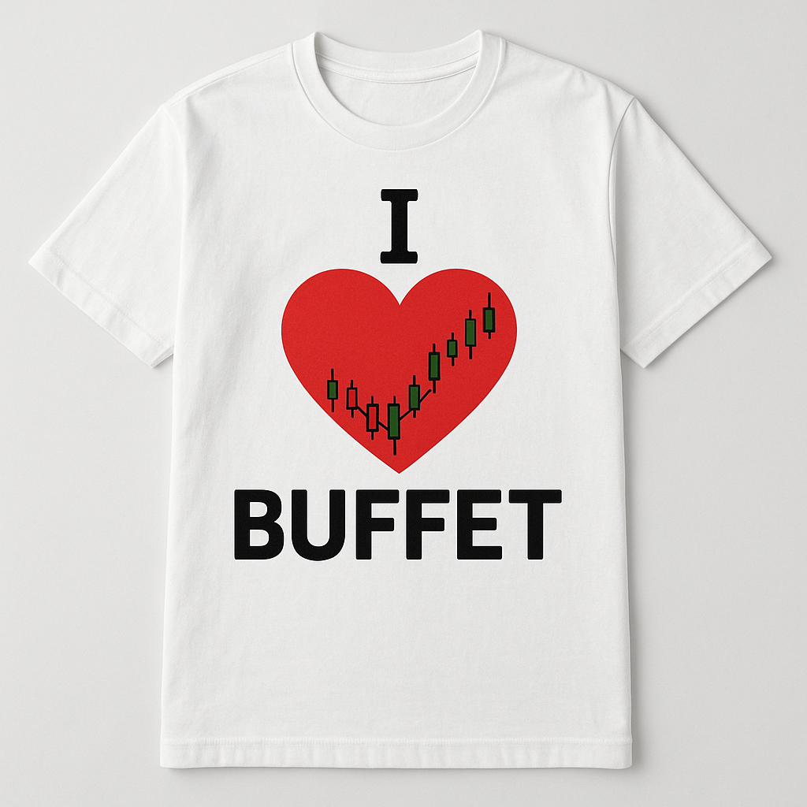

“LOVE BUFFET?”
“Time is the friend of the wonderful business, the enemy of the mediocre.”
시장 측정기
25
극심한 고평가
버핏 지수
235%
금리 환경
10점
인플레이션
10점
GDP 성장률
5점
"버핏이라면 몇 점 줄까?"
관심 있는 종목의 회사명이나 티커를 입력해보세요.
현재 분석 가능한 종목: AAPL, MSFT, GOOGL, AMZN, TSLA, NVDA, V, JPM, UNH, JNJ
/100
주요 지표 분석
| 지표 | 값 | 점수 | 설명 |
|---|
💡 투자의 대가는 숫자 너머를 봅니다
- 이해 가능한 사업: 내가 이 회사가 어떻게 돈을 버는지 10분 안에 설명할 수 있는가?
- 경제적 해자(Economic Moat): 경쟁사들이 쉽게 넘볼 수 없는 강력한 경쟁 우위가 있는가? (브랜드, 특허, 네트워크 효과 등)
- 신뢰할 수 있는 경영진: 유능하고, 정직하며, 주주의 이익을 최우선으로 생각하는가?